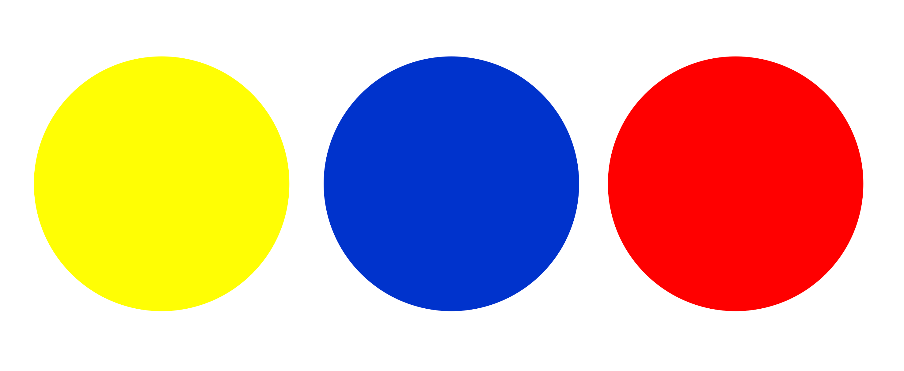
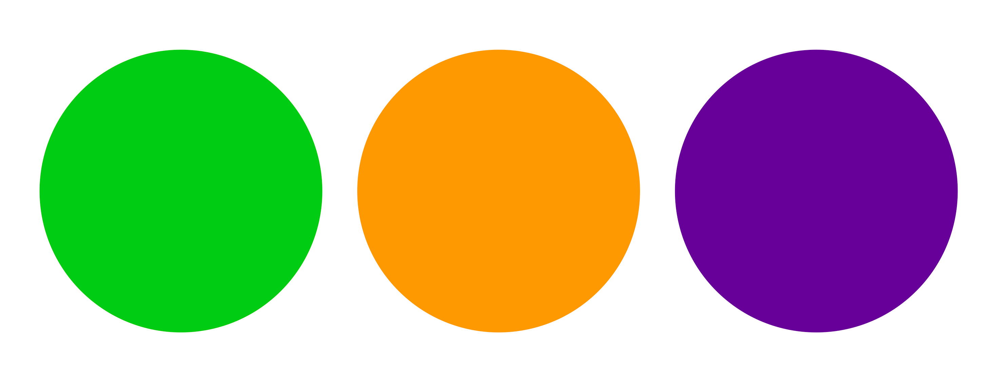
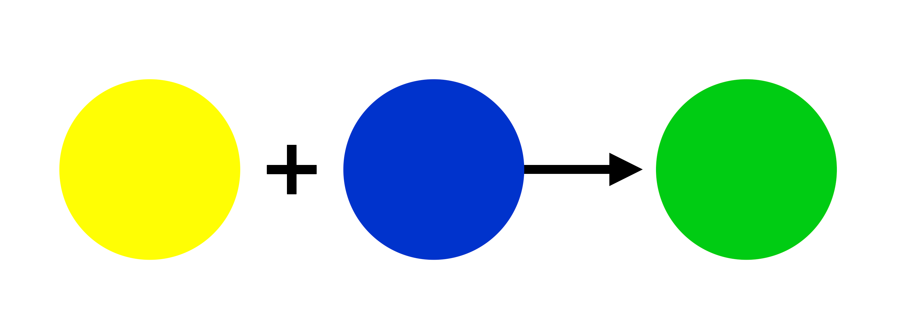
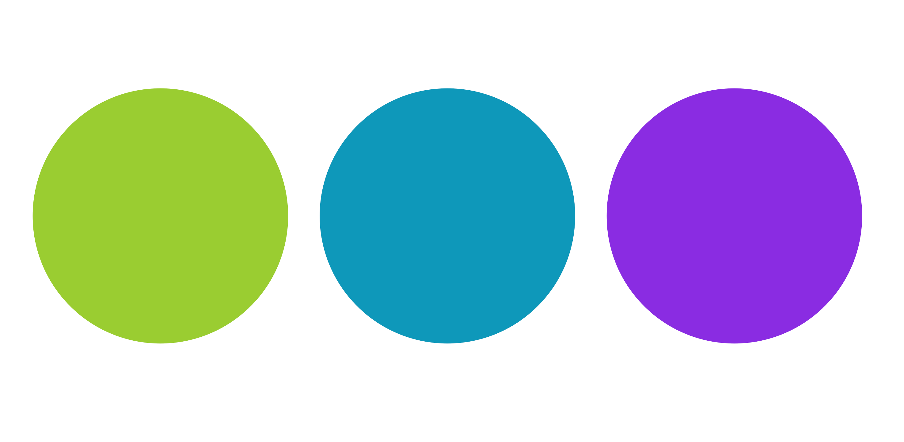
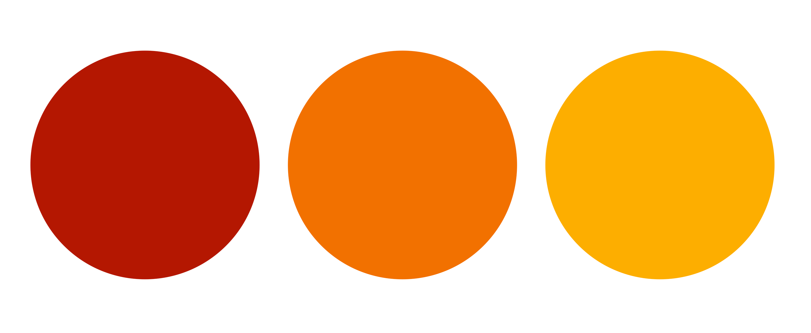
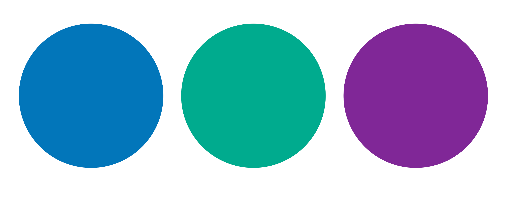
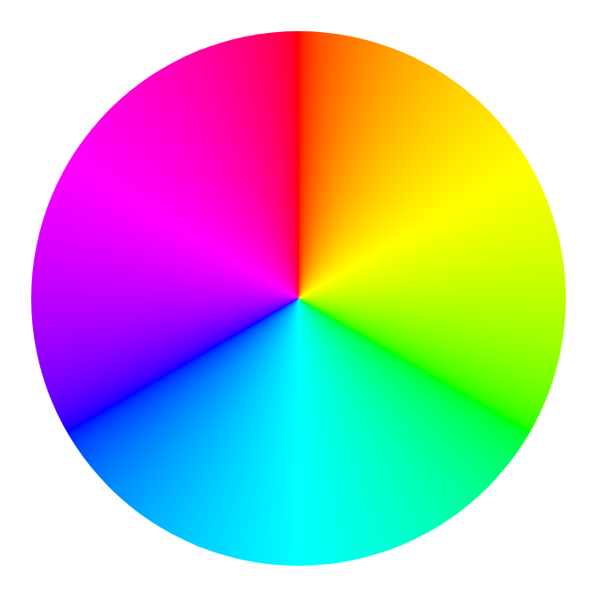
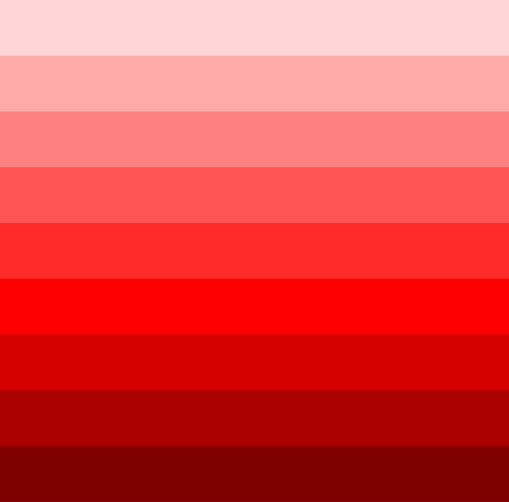

ما هي نظرية الألوان Color Theory في التصميم؟
نظريتُعد نظرية الألوان دراسةً لكيفية تفاعل الألوان مع بعضها البعض وتأثيرها على إدراكنا لها. وهي تتناول العلاقات بين الألوان، وتناغم الألوان، والأثر النفسي الذي تتركه الألوان. لنبدأ في استكشاف هذا العالم؛ إذ يمكن تصنيف الألوان إلى ألوان أساسية (primary)، أو ثانوية (secondary)، أو ثالثية (tertiary).
الألوان الأولية (Primary) والثانوية (Secondary) والثالثية (Tertiary)
الألوان الأساسية - الأصفر Yellow والأزرق Blue والأحمر Red - هي الألوان الجوهرية التي تُشتق منها جميع الألوان الأخرى.

تنتج الألوان الثانوية (Secondary) عن مزج كميات متساوية من لونين أساسيين (primary). وتُعد الألوان الأخضر Green والبرتقالي Orange والأرجواني Purple أمثلة على الألوان الثانوية.

على سبيل المثال، اللون الأخضر هو نتاج دمج اللونين الأصفر والأزرق.

تنتج الألوان الثلاثية (Tertiary) من دمج لون أساسي مع لون ثانوي مجاور. ومن أمثلة الألوان الثلاثية: الأصفر المخضر Yellow-Green، والأزرق المخضر Blue-Green، والأزرق البنفسجيBlue-Violet.

الألوان الدافئة (Warm) والباردة (Cool)
يُعدّ هذا تصنيفاً أساسياً في عالم نظرية الألوان، لكن توجد طرق أخرى لتصنيف الألوان؛ إذ يمكن تصنيفها إلى ألوان دافئة (warm) أو باردة (cool)، بناءً على درجة حرارتها.

تُثير الألوان الدافئة - كاللون الأحمر Red والبرتقالي Orange والأصفر Yellow - مشاعر الراحة والدفء والألفة (comfort, warmth, and coziness).

تُثير الألوان الباردة - كالدرجات الزرقاء والخضراء والأرجوانية - مشاعر الهدوء والسكينة والمهنية (calmness, serenity, and professionalism).
نماذج الألوان Color Models
يمكن أيضاً تمثيل الألوان من خلال نماذج الألوان، وهي ضرورية لوصف الألوان وإعادة إنتاجها بطريقة قياسية. ومن نماذج الألوان شائعة الاستخدام: نموذج RGB، ونموذج HSV، ونموذج HSL؛ حيث تُمثَّل الألوان في هذه النماذج بناءً على خصائص مختلفة. وسوف تتعرف على المزيد حول هذه النماذج في دروس قادمة.
عجلة الألوان The Color Wheel
رائع. والآن بعد أن أصبحت على دراية أكبر بهذا الموضوع، دعنا نتحدث عن أداة أساسية يستخدمها المصممون لتمثيل الألوان والعلاقات فيما بينها.
عجلة الألوان (The color wheel) هي مخطط دائري (circular diagram) يوضح كيفية ارتباط الألوان ببعضها البعض. وتُعد أداةً أساسية للمصممين (designers)؛ إذ تساعدهم في اختيار مجموعات الألوان (color combinations)، وهو أمر مفيد للغاية عند إعداد لوحات الألوان (color palettes) وأنظمة الألوان (color schemes).

أنظمة الألوان Color Schemes
نظام الألوان هو مجموعة من الألوان التي يتم اختيارها لتصميم أو مشروع معين، وعادةً ما يستند هذا الاختيار إلى مبادئ نظرية الألوان. ومن خلال فهم العلاقات بين الألوان على عجلة الألوان، يمكنك ابتكار أنواع مختلفة من أنظمة الألوان. دعونا نستعرض بعضاً منها.
نظام الألوان المتجاورة Analogous Color Scheme
تخلق أنظمة الألوان المتجاورة (Analogous color schemes) تجارب متناغمة ومريحة؛ فهي تعتمد على ألوان تقع بجوار بعضها البعض على عجلة الألوان (color wheel).
نظام الألوان المتكاملة Complementary Color Scheme
تُنشئ أنظمة الألوان المتكاملة تبايناً (contrast) عالياً وتأثيراً بصرياً (visual impact) قوياً؛ إذ تقع ألوانها في طرفين متقابلين على عجلة الألوان بالنسبة لبعضها البعض.
يُعد تباين الألوان عنصراً أساسياً لإتاحة الوصول إلى محتوى الويب؛ فهو يضمن إمكانية تمييز النصوص والعناصر المهمة الأخرى بوضوح عن خلفيتها، وهو أمر بالغ الأهمية لا سيما للأشخاص ذوي الإعاقات البصرية.
في عجلة ألوان RGB، تقع الألوان المتكاملة عند طرفي العجلة المتقابلين. فعلى سبيل المثال، يُعد اللون الأرجواني Magenta مكملاً للون الأخضر Green، واللون الأزرق Blue مكملاً للون الأصفر Yellow، وهكذا.
نظام الألوان الثلاثي Triadic Color Scheme
يتميز نظام الألوان الثلاثي (Triadic color scheme) بألوانه النابضة بالحياة. وتتكون هذه الألوان من درجات تبعد مسافات متساوية تقريباً عن بعضها البعض؛ فإذا تم الربط بينها، فإنها تشكل مثلثاً متساوي الأضلاع على عجلة الألوان.
نظام الألوان أحادي الدرجة Monochromatic Color Scheme
وأخيرًا، لدينا نظام الألوان أحادي اللون (Monochromatic). في هذا النظام، تُشتق جميع الألوان من لون أساسي واحد من خلال تعديل درجات سطوعه (lightness)، وعتامته (darkness)، وتشَبُّعه (saturation). يضفي هذا الأسلوب شعورًا بالوحدة والانسجام، مع الحفاظ في الوقت ذاته على وجود تباين.

نصائح لاستخدام الألوان بفعالية
وأخيرًا، إليك بعض النصائح لاستخدام الألوان بفعالية في تطوير الويب:
-
أنشئ نظاماً لونياً (color scheme) يحدد الهوية البصرية (branding) لموقعك الإلكتروني.
-
استخدم الألوان لإثارة المشاعر (emotions) والتصورات (perceptions) التي تتماشى مع أهدافك (goals).
-
اختر ألواناً ذات تباين كافٍ (enough contrast) لجعل موقعك الإلكتروني متاحاً للجميع.
-
استخدم الألوان لإبراز العناصر المهمة في موقعك الإلكتروني، مثل الأزرار.
-
استخدم الألوان بشكل متسق (consistently)، ووظِّفها لإنشاء تسلسل هرمي بصري (visual hierarchy).
تُعد نظرية الألوان (Color theory) ركيزة أساسية في التصميم. فمن خلال فهم سيكولوجية الألوان (color psychology)، وتناغمها (harmonies)، ومعايير سهولة الوصول إليها، يمكنك ابتكار تصاميم فعالة، وإثارة المشاعر، وتعزيز تجربة المستخدم.
أسئلة :
لماذا تُعد نظرية الألوان (color theory) مهمة في تطوير الويب؟
1. ليست مهمة؛ إذ لا تأثير لها على تجربة المستخدم. ❌
2. تساعد المصممين على إنشاء مواقع إلكترونية جذابة بصرياً. ✅
3. تقتصر أهميتها على التصميم المخصص للطباعة فقط. ❌
4. لا علاقة لها باتجاهات تصميم الويب الحديثة. ❌
أيُّ نظامٍ لونيٍّ (color scheme) هو الأكثر قدرةً على خلق تجارب متناغمة ومريحة؟
1. الألوان المتقاربة (Analogous) ✅
2. لألوان المتكاملة (Complementary) ❌
3. الألوان أحادية الدرجة (Monochromatic) ❌
4. الألوان الثلاثية (Triadic) ❌
يشير مفهوم تناغم الألوان (color harmony) إلى:
1. استخدام لون واحد فقط في التصميم. ❌
2. الجمع بين ألوان تتنافر مع بعضها البعض. ❌
3. ابتكار توليفات لونية ذات تأثير بصري جيد (visually effective color combinations). ✅
4. درجة سطوع اللون (brightness) أو عتمته (darkness). ❌